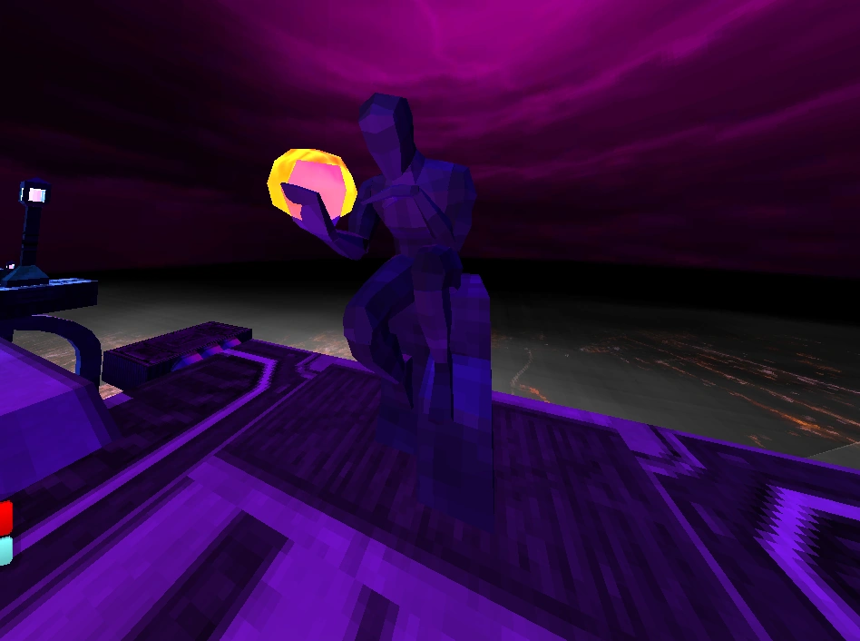
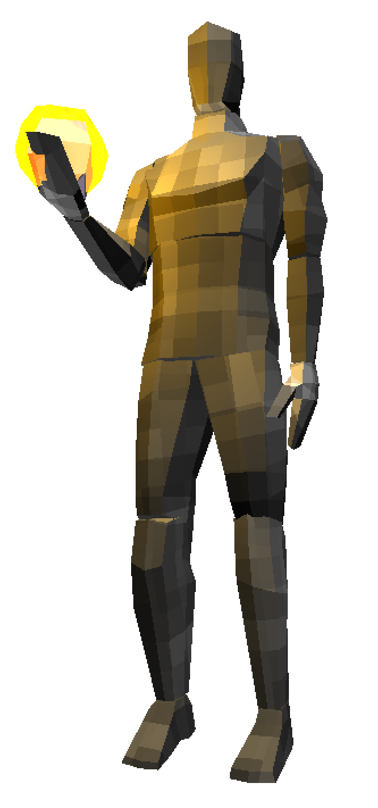

Cerberi are massive, humanoid creatures with stone-like skin and a featureless face. They wield a glowing yellow-orange energy orb resembling an apple, which they use as a weapon. These creatures are guardians of Hell, often seen sitting motionless on their pedestals near Hell's iconic gateway adorned with the words: "Abandon hope all ye who enter here."

Combat Overview
Cerberi awaken from their dormant state once you enter their arena. Despite being slow and predictable, they deal devastating damage. Cerberi become especially dangerous in groups, as managing their attacks simultaneously can be overwhelming. When reduced to half health, cracks appear on their stone-like skin, signifying their weakened state.

Attacks
Energy Orb Throw: Cerberi hurl their energy orb at the player, dealing 20 damage on impact. This attack is telegraphed by a loud metallic screech and a clear windup animation. The projectile can be parried, though its speed and trajectory require precise timing.
Melee Dash Attack: A swift forward dash that deals 25 damage and significant knockback. On Brutal difficulty, Cerberi will dash twice in quick succession.
Stomp Shockwave: A ground slam that generates a damaging shockwave dealing 25 damage. On Brutal difficulty, the stomp creates a second, smaller shockwave shortly after the first.
Enraged State
When a Cerberus is killed, all other active Cerberi become enraged, increasing their movement and attack speed. This enraged state is permanent, persisting until death. Enraged Cerberi are more aggressive but can be baited into falling off ledges due to their unrelenting attacks.
Strategies & Tips
Prioritize Single Targets: Focus on one Cerberus at a time to avoid multiple enemies entering their enraged state simultaneously.
Master Parrying: The energy orb can be parried, turning their attack into an opportunity for damage. Practice the timing to exploit this weakness.
Stay Mobile: Cerberi attacks are slow but have large hitboxes. Constant movement and quick dashes can help you avoid their dashes and shockwaves.
Control the Arena: Use the environment to block energy orb projectiles and create distance from enraged Cerberi.
Weapon Choices: Use high-damage weapons like the Malicious Railcannon or the Nailgun's Overheat mechanic to deal significant damage during their slow attacks or transitions.